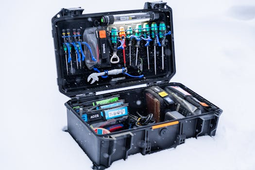

業務用 AI 不只是寫信：100+ 個 AI 代理提示詞揭露的差距
本文是社群貼文的完整延伸版。 社群版講了核心觀念，本文加上獨家深度分析和台灣企業的導入建議。
重點回顧
美國 Highspot 整理了超過 100 條 AI 代理在業務場景的提示詞。這不是「幫我寫一封 Email」的等級。這是 AI 代理主動分析贏單模式、準備客戶通話、監控 Pipeline 健康度的完整操作手冊。
更關鍵的是，AI 代理不只是業務工具——它覆蓋了整個 GTM（Go-To-Market）組織，包含業務、行銷、訓練、營運。
BCG 報告：51% 北美企業正在試用 AI 代理。Google 報告：53% 金融服務高管已在日常使用。台灣企業不能再等了。
【獨家】七大角色的 AI 代理應用場景
 Photo by
Photo by Highspot 把 AI 代理的提示詞分成七大角色。這個分類本身就很有意義——它告訴你，AI 代理不是某個人的工具，是整個組織的基礎建設。
1. 業務人員：從翻資料到被推薦
傳統業務要自己翻 CRM、找素材、準備通話。AI 代理徹底改變了這個流程。
Deal 策略： - 「上個月類似的案子，成交時用了哪些素材？」 - 「根據買家的產業和階段，推薦一份簡報。」 - 「分析我最近通話的 Talk-to-Listen Ratio。」
通話準備： - 「明天的 Discovery Call 我應該複習什麼？」 - 「根據意圖數據，什麼時候是最佳跟進時機？」 - 「這個產品異議，我應該用什麼話術？」
Pipeline 洞察： - 「誰曾經成交過類似的案子？他們怎麼做的？」 - 「超過 10 萬美金的成交案，哪些素材幫助最大？」 - 「彙整最近的買家行為，建議下一步。」
這裡的關鍵字是「主動推薦」。不是你去問 AI，是 AI 根據你的情境主動告訴你該做什麼。
2. 業務經理：精準 Coaching 不靠直覺
以前業務經理要花整晚聽通話錄音、翻報表，才能找到 coaching 的切入點。
現在可以直接問： - 「哪些業務的預測落後了？」 - 「他們最近三通電話裡有哪些 coaching 時刻？」 - 「Top Performer 有哪些特質是這個業務缺少的？」 - 「比較這個業務跟 Top Performer 的活動數據。」
AI 代理不只是告訴你「誰表現不好」，它告訴你「差在哪、怎麼教」。
3. 業務主管：從直覺到數據決策
VP 層級的業務主管，需要的不是細節，是全局視野。
- 「各區域的案子卡在哪個階段最多？」
- 「按競爭對手分類的 Closed-Lost 分析。」
- 「哪些業務行為跟勝率上升有相關性？」
- 「根據 Pipeline、Deal Size、人力，預測下一季的人力需求。」
進階版甚至可以讓 AI 做三種情境的營收模型（保守、基準、積極），直接生成給董事會的報告。
4. 行銷團隊：內容不是做完就好
行銷做了很多素材，但哪些真的有用？
- 「哪些素材被大量使用但客戶互動很低？」代表素材本身有問題。
- 「哪些素材最近沒有任何業務分享？」代表可能要退役。
- 「哪個素材影響了最多營收？」代表要加碼推廣。
- 「建立一份『退役或更新』的素材清單，附優先排序。」
這讓行銷從「做內容」變成「管理內容績效」。
5. 行銷主管：證明行銷的 ROI
行銷主管最常被問的問題：「你們的活動對營收有什麼貢獻？」
AI 代理可以直接回答： - 「比較活動產生的商機 vs Pipeline 影響。」 - 「Q2 成交的案子裡，有哪些受到某個活動影響？」 - 「追蹤新產品上線素材的使用率，按區域和業務層級分類。」
這不是行銷自己寫的 PPT。這是有數據支持的 ROI 報告。
6. Sales Enablement：訓練不是做完就好
訓練團隊最頭痛的問題：「到底有多少人真的完成了訓練？完成之後有沒有用？」
- 「哪些業務還沒完成新人訓練的里程碑？」
- 「哪個學習路徑的完成率最低？」
- 「哪些通話主題顯示業務的知識有缺口？」
- 「比較訓練成果和實際的業務表現。」
AI 代理讓訓練從「完成率」進化到「績效影響」。
7. Revenue Operations：串起整個組織
RevOps 是最需要全局數據的角色。AI 代理在這裡發揮最大價值。
- 「各產業、各區域的平均成交速度是多少？」
- 「過去 12 個月的 Win-Loss 分析，哪個區域配合哪個 Play 值得擴大？」
- 「建議整合哪些工具，估算節省的成本。」
- 「模擬三種成長情境，結合 Pipeline、Deal Size、人力數據。」
【獨家】台灣企業的 AI 代理導入路徑
 Photo by
Photo by 看完國外的 100+ 提示詞，你可能會想：「我們公司沒有這種系統怎麼辦？」
不用急。我在企業培訓裡帶過超過 400 家企業，我的建議是三步走：
第一步：盤點你的「人力浪費點」
你的業務團隊每天花多少時間在： - 翻 CRM 找客戶資料？ - 準備通話前的研究？ - 寫會議紀錄和跟進信？ - 手動整理 Pipeline 報表？
這些都是「人在做 AI 該做的事」。
第二步：從一個場景開始
不需要一次導入整套 AI 代理平台。先挑一個最痛的場景，用現有的 AI 工具（ChatGPT、Gemini、Claude）模擬 AI 代理的工作方式。
例如：每次通話前，把客戶資料丟給 AI，請它幫你產出準備清單和可能的反對意見。做三個月，看看成交率有沒有變化。
第三步：擴展到組織層級
當一個場景驗證成功，再擴展到業務經理的 coaching、行銷的素材績效追蹤、RevOps 的 Pipeline 分析。
關鍵是：先改流程，再買工具。 很多企業的問題不是沒有好工具，是流程沒有為 AI 設計。
阿峰觀點
 Photo by Tara Winstead on Pexels
Photo by Tara Winstead on Pexels
我在企業培訓裡一直說：「你是機長，AI 是機組人員。」
Highspot 的這份 100+ 提示詞清單，讓我看到一件事：機組人員的能力已經遠超過大部分機長的想像。
大部分台灣企業還在讓 AI 幫忙「端咖啡」——寫信、翻譯、整理筆記。但國外的領先企業已經讓 AI 代理「看儀表板、監控油量、回報天氣、協調降落」了。
差距不是在工具，是在想像力。
51% 北美企業正在試用 AI 代理，53% 金融高管已在日常使用。這不是趨勢預測，是已經發生的事實。台灣企業如果現在不開始，等到國外企業把 AI 代理玩成熟了，差距會從「半年」變成「三年」。
好消息是：起步不需要大投資。你需要的不是一套百萬美金的系統，而是一次認真的流程重新設計。
先問自己：「我的團隊每天有多少時間花在 AI 可以代勞的事情上？」
答案通常會嚇到你。
本文提到的資源

Photo by Andreas Näslund on Pexels| 工具/資源 | 連結 | 說明 |
|---|---|---|
| Highspot | https://www.highspot.com | AI 銷售賦能平台，原文出處 |
| ChatGPT | https://chatgpt.com | AI 對話工具 |
| Gemini | https://gemini.google.com | Google AI 工具 |
| Claude AI | https://claude.ai | Anthropic AI 工具 |
企業想導入 AI？阿峰老師服務過台積電、國泰金控、中華電信等超過 400 家企業。 → https://www.autolab.cloud
關於作者
黃敬峰（AI峰哥），企業 AI 實戰培訓專家，400+ 企業合作、10,000+ 學員。 核心心法：「會用、懂用、好用、每天用」 官網：https://www.autolab.cloud